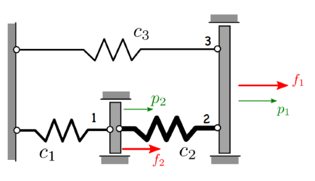
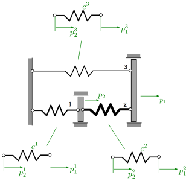

Übung Federsysteme¶

Gesucht:
Verschiebungen für \(p_1\) und \(p_2\)
Federkräfte \(N_1\) , \(N_2\) und \(N_3\)
Gegeben:
\(c_1=2k\) , \(c_2=4k\) , \(c_3=k\) , \(f_1=3F\) , \(f_2=-F\)
notwendige Python Bilbiotheken importieren / Funktionen definieren¶
# Bibliotheken
import numpy as np
import array_to_latex as a2l # wenn nicht vorhanden: !pip install array_to_latex
# Funktionen
def pretty_print(variablename,array):
from IPython.display import Latex # laTeX Code als Output darstellen
# Anpassung ob Array oder nur ein Wert
if array.ndim > 1:
# Anpassung Ausgabeformat für Integer Werte
if np.issubdtype(array[0,0], int) == True:
format = '{:6.0f}'
else:
format = '{:6.2f}'
latex_code = a2l.to_ltx(array, frmt = format, arraytype = 'pmatrix', print_out=False)
print_str = " \\begin{aligned} %s = %s \\end{aligned}" % (variablename, latex_code)
else:
print_str = " \\begin{aligned} %s = %f \\end{aligned}" % (variablename, array[0])
return display(Latex(print_str))
Lösung ohne Verwendung von Listen (übersichtlicher)¶
Hinweis: Da keine Listen verwendet werden ist der Code übersichtlicher, jedoch sind Anpassungen aufwendiger. Weiter unten wird ein Lösungsweg mit der Verwendung von Listen aufgezeigt
# Bibliotheken
import numpy as np
import array_to_latex as a2l # wenn nicht vorhanden: !pip install array_to_latex
#np.array in LaTex konvertieren und ausgeben
def pretty_print(variablename,array):
from IPython.display import Latex # laTeX Code als Output darstellen
if array.ndim > 1:
# adjust print format if values are integer
if np.issubdtype(array[0,0], int) == True:
format = '{:6.0f}'
else:
format = '{:6.2f}'
latex_code = a2l.to_ltx(array, frmt = format, arraytype = 'pmatrix', print_out=False)
print_str = " \\begin{aligned} %s = %s \\end{aligned}" % (variablename, latex_code)
else:
print_str = " \\begin{aligned} %s = %f \\end{aligned}" % (variablename, array[0])
return display(Latex(print_str))
Steifigkeitsmatritzen (Elemente)¶
\(K^e\) = \(\left(\begin{array}{rrr} c^e & -c^e \\ -c^e & c^e \\ \end{array}\right)\)
Hinweis: Da wir numerisch rechnen, setzen wir k=1
#gegeben
c1=2
c2=4
c3=1
Ke_1 = np.array([[1, -1], [-1, 1]]) * c1
Ke_2 = np.array([[1, -1], [-1, 1]]) * c2
Ke_3 = np.array([[1, -1], [-1, 1]]) * c3
#Ausgabe zur optischen Kontrolle
pretty_print("Ke_1",Ke_1)
pretty_print("Ke_2",Ke_2)
pretty_print("Ke_3",Ke_3)
\[\begin{split}\begin{aligned} Ke_1 = \begin{pmatrix}
2 & -2 \\
-2 & 2
\end{pmatrix} \end{aligned}\end{split}\]
\[\begin{split}\begin{aligned} Ke_2 = \begin{pmatrix}
4 & -4 \\
-4 & 4
\end{pmatrix} \end{aligned}\end{split}\]
\[\begin{split}\begin{aligned} Ke_3 = \begin{pmatrix}
1 & -1 \\
-1 & 1
\end{pmatrix} \end{aligned}\end{split}\]
Freiheitsgrade (System)¶
\(q_{sys}\) = \(\left(\begin{array}{rrr} q_1 \\ q_2 \\ \end{array}\right)\)
Hinweis: Da wir numerisch rechnen, setzen wir F=1
#Lastvektor
q_sys = np.array([[3], [-1]])
#Ausgabe zur optischen Kontrolle
pretty_print("q_{sys}",q_sys)
\[\begin{split}\begin{aligned} q_{sys} = \begin{pmatrix}
3 \\
-1
\end{pmatrix} \end{aligned}\end{split}\]
Inzidenzmatritzen (Elemente)¶

inz_1=np.array([[0, 1], [0, 0]]) #Lambda_1
inz_2=np.array([[1, 0], [0, 1]]) #Lambda_2
inz_3=np.array([[1, 0], [0, 0]]) #Lambda_3
#Ausgabe zur optischen Kontrolle
pretty_print("\Lambda_1",inz_1)
pretty_print("\Lambda_2",inz_2)
pretty_print("\Lambda_3",inz_3)
\[\begin{split}\begin{aligned} \Lambda_1 = \begin{pmatrix}
0 & 1 \\
0 & 0
\end{pmatrix} \end{aligned}\end{split}\]
\[\begin{split}\begin{aligned} \Lambda_2 = \begin{pmatrix}
1 & 0 \\
0 & 1
\end{pmatrix} \end{aligned}\end{split}\]
\[\begin{split}\begin{aligned} \Lambda_3 = \begin{pmatrix}
1 & 0 \\
0 & 0
\end{pmatrix} \end{aligned}\end{split}\]
Steifigkeitsmatrix (System)¶
\( K_{sys} = \sum_{e=1}^3 {\Lambda^e}^T {K^e} {\Lambda^e} \)
Ksyspart_1 = np.matmul(np.matmul(np.transpose(inz_1),Ke_1),inz_1)
Ksyspart_2 = np.matmul(np.matmul(np.transpose(inz_2),Ke_2),inz_2)
Ksyspart_3 = np.matmul(np.matmul(np.transpose(inz_3),Ke_3),inz_3)
K_sys= Ksyspart_1 + Ksyspart_2 + Ksyspart_3
#Ausgabe zur optischen Kontrolle
pretty_print("K_{sys}",K_sys)
\[\begin{split}\begin{aligned} K_{sys} = \begin{pmatrix}
5 & -4 \\
-4 & 6
\end{pmatrix} \end{aligned}\end{split}\]
Freiheitsgrade (System)¶
lösen von \(p_{sys}\) :
\(K_{sys} p_{sys} = q_{sys}\)
p_sys = np.linalg.solve(K_sys, q_sys)
pretty_print("p_{sys}",p_sys)
#Ausgabe der Lösung
print("Lösung:")
pretty_print("p_{1}",p_sys[0])
pretty_print("p_{2}",p_sys[1])
\[\begin{split}\begin{aligned} p_{sys} = \begin{pmatrix}
1.00\\
0.50
\end{pmatrix} \end{aligned}\end{split}\]
Lösung:
\[\begin{aligned} p_{1} = 1.000000 \end{aligned}\]
\[\begin{aligned} p_{2} = 0.500000 \end{aligned}\]
Freiheitsgrade (Elemente)¶
pe_1=np.matmul(inz_1,p_sys)
pe_2=np.matmul(inz_2,p_sys)
pe_3=np.matmul(inz_3,p_sys)
#Ausgabe zur optischen Kontrolle
pretty_print("pe_{1}",pe_1)
pretty_print("pe_{2}",pe_2)
pretty_print("pe_{3}",pe_3)
\[\begin{split}\begin{aligned} pe_{1} = \begin{pmatrix}
0.50\\
0.00
\end{pmatrix} \end{aligned}\end{split}\]
\[\begin{split}\begin{aligned} pe_{2} = \begin{pmatrix}
1.00\\
0.50
\end{pmatrix} \end{aligned}\end{split}\]
\[\begin{split}\begin{aligned} pe_{3} = \begin{pmatrix}
1.00\\
0.00
\end{pmatrix} \end{aligned}\end{split}\]
Federkräfte (Elemente)¶
Ne_1 = c1*(pe_1[0]-pe_1[1])
Ne_2 = c2*(pe_2[0]-pe_2[1])
Ne_3 = c3*(pe_3[0]-pe_3[1])
#Ausgabe der Lösung
print("Lösung:")
pretty_print("N_{1}",Ne_1)
pretty_print("N_{2}",Ne_2)
pretty_print("N_{3}",Ne_3)
Lösung:
\[\begin{aligned} N_{1} = 1.000000 \end{aligned}\]
\[\begin{aligned} N_{2} = 2.000000 \end{aligned}\]
\[\begin{aligned} N_{3} = 1.000000 \end{aligned}\]
Lösung mit der Verwendung von Listen (Fortgeschritten)¶
Hinweis: Die Verwendung von Listen sieht kompliziert aus, vereinfacht aber die Eingabe, weil weniger geändert werden muss
Steifigkeitsmatritzen (Elemente)¶
\(Ke_i\) = \(\left(\begin{array}{rrr} c_i & -c_i \\ -c_i & c_i \\ \end{array}\right)\)
Hinweis: Da wir numerisch rechnen, setzen wir k=1
#gegeben
c_list = [2,4,1] #k
Ke = [] # leere Liste anlegen
i=0 # Laufvariable
# Schleife mit allen Einträgen in c_list
for c in c_list:
i+=1 # Laufvariable + 1
Ke_i=np.array([[1, -1], [-1, 1]])*c
Ke.append(Ke_i)
#Ausgabe zur optischen Kontrolle
pretty_print(f"Ke_{i}",Ke_i)
\[\begin{split}\begin{aligned} Ke_1 = \begin{pmatrix}
2 & -2 \\
-2 & 2
\end{pmatrix} \end{aligned}\end{split}\]
\[\begin{split}\begin{aligned} Ke_2 = \begin{pmatrix}
4 & -4 \\
-4 & 4
\end{pmatrix} \end{aligned}\end{split}\]
\[\begin{split}\begin{aligned} Ke_3 = \begin{pmatrix}
1 & -1 \\
-1 & 1
\end{pmatrix} \end{aligned}\end{split}\]
Freiheitsgrade (System)¶
\(q_{sys}\) = \(\left(\begin{array}{rrr} q_1 \\ q_2 \\ \end{array}\right)\)
Hinweis: Da wir numerisch rechnen, setzen wir F=1
# Lastvektor
q_sys = np.array([[3], [-1]])
#Ausgabe zur optischen Kontrolle
pretty_print("q_{sys}",q_sys)
\[\begin{split}\begin{aligned} q_{sys} = \begin{pmatrix}
3 \\
-1
\end{pmatrix} \end{aligned}\end{split}\]
Inzidenzmatritzen (Elemente)¶
inz=[] # leere Liste anlegen
inz.append(np.array([[0, 1], [0, 0]])) #Lambda_1
inz.append(np.array([[1, 0], [0, 1]])) #Lambda_2
inz.append(np.array([[1, 0], [0, 0]])) #Lambda_3
#Ausgabe zur optischen Kontrolle
i=0
for inz_i in inz: i+=1;pretty_print(f"\Lambda_{i}",inz_i)
\[\begin{split}\begin{aligned} \Lambda_1 = \begin{pmatrix}
0 & 1 \\
0 & 0
\end{pmatrix} \end{aligned}\end{split}\]
\[\begin{split}\begin{aligned} \Lambda_2 = \begin{pmatrix}
1 & 0 \\
0 & 1
\end{pmatrix} \end{aligned}\end{split}\]
\[\begin{split}\begin{aligned} \Lambda_3 = \begin{pmatrix}
1 & 0 \\
0 & 0
\end{pmatrix} \end{aligned}\end{split}\]
Steifigkeitsmatrix (System)¶
\( K_{sys} = \sum_{e=1}^3 {\Lambda^e}^T {K^e} {\Lambda^e} \)
K_i=[] # leere Liste anlegen
# Schleife über alle Elemente (Anzahl Einträge von inz)
for i in range(len(inz)):
K_i.append(np.matmul(np.matmul(np.transpose(inz[i]),Ke[i]),inz[i]))
K_sys=np.sum(K_i, axis=0)
#Ausgabe zur optischen Kontrolle
pretty_print("K_{sys}",K_sys)
\[\begin{split}\begin{aligned} K_{sys} = \begin{pmatrix}
5 & -4 \\
-4 & 6
\end{pmatrix} \end{aligned}\end{split}\]
Freiheitsgrade (System)¶
lösen von \(p_{sys}\) :
\(K_{sys} p_{sys} = q_{sys}\)
p_sys = np.linalg.solve(K_sys, q_sys)
pretty_print("p_{sys}",p_sys)
#Ausgabe der Lösung
print("Lösung:")
i=0
for p_sys_i in p_sys: i+=1;pretty_print(f"p_{i}",p_sys_i)
\[\begin{split}\begin{aligned} p_{sys} = \begin{pmatrix}
1.00\\
0.50
\end{pmatrix} \end{aligned}\end{split}\]
Lösung:
\[\begin{aligned} p_1 = 1.000000 \end{aligned}\]
\[\begin{aligned} p_2 = 0.500000 \end{aligned}\]
Freiheitsgrade (Elemente)¶
pe = [] # leere Liste anlegen
# Schleife über alle Elemente (Anzahl Einträge von c_list)
for i in range(len(c_list)):
pe_i=np.matmul(inz[i],p_sys)
pe.append(pe_i)
#Ausgabe zur optischen Kontrolle
pretty_print(f"pe_{i+1}",pe_i)
\[\begin{split}\begin{aligned} pe_1 = \begin{pmatrix}
0.50\\
0.00
\end{pmatrix} \end{aligned}\end{split}\]
\[\begin{split}\begin{aligned} pe_2 = \begin{pmatrix}
1.00\\
0.50
\end{pmatrix} \end{aligned}\end{split}\]
\[\begin{split}\begin{aligned} pe_3 = \begin{pmatrix}
1.00\\
0.00
\end{pmatrix} \end{aligned}\end{split}\]
Federkräfte (Elemente)¶
Ne = [] # leere Liste anlegen
i=0 # Laufvariable
# Schleife mit allen Einträgen in c_list
print("Lösung:")
for c in c_list:
i+=1 # Laufvariable + 1
Ne_i=c*(pe[i-1][0]-pe[i-1][1]) # ersten Listenindex = 0 (deswegen) i-1)
Ne.append(Ne_i)
#Ausgabe der Lösung
pretty_print(f"N_{i}",Ne_i)
Lösung:
\[\begin{aligned} N_1 = 1.000000 \end{aligned}\]
\[\begin{aligned} N_2 = 2.000000 \end{aligned}\]
\[\begin{aligned} N_3 = 1.000000 \end{aligned}\]